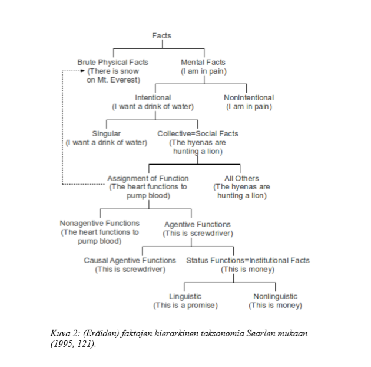

Created Thursday 02 July 2020
Karvinen Juho (2013), Linuxin käyttö ja naissukupuoleen kohdistuvat odotukset, s. 20-23
Hyväksyn tässä tutkimuksessa (maltillisen) sosiaalisen konstruktionismin perusajatuksen. Yhteiskunnallisten ja kulttuuristen ilmiöiden alkuperä on useimmiten sosiaalisissa prosesseissa, ne rakentuvat sosiaalisesti. Samoin niiden säilymisen, muuttumisen ja katoamisen mekanismit ovat useimmiten sosiaalisia. Termi ”sosiaalinen konstruktio” voidaan (etenkin englanninkielisessä kirjallisuudessa) ymmärtää joko rakentumisen prosessiksi (konstruoimiseksi) tai prosessin lopputuotteeksi (Hacking 2009, 61). Toisinaan nämä merkitykset sekoittuvat. Kuitenkin esimerkiksi sosiaalisen konstruktionismin perustajat Berger ja Luckmann (1994, 74) pitävät tuottamista ja tuotteen objektiivista olemassaoloa varsin selväsanaisesti erillisinä momentteina yksilön ja yhteiskunnan dialektiikassa. Sosiaalinen rakentuminen, josta kirja saa otsikkonsa (ja jota voi myös pitää kirjan suurimpana uutisena), on prosessi, jossa yksilöt toiminnallaan ”ulkoistavat” itsestään jotain, mikä tyypitysten kautta instituutioituu. Dialektiikan toisessa momentissa instituutioista muodostuu yhteiskunta objektiivisena todellisuutena (sosiaaliset faktat), joka ei ole enää yksittäisten ihmisten tahdonalainen asia. Bergerin ja Luckmannin dialektiikan kolmannessa momentissa yksilö tulee sosialisaation kautta yhteiskunnan jäseneksi, siis sisäistää jotain objektiivisesta todellisuudesta subjektiivisuuteensa.
Mahdollisesti siitä syystä, että itsestäänselvyyksinä pidettyjen asioiden konstruoidun luonteen paljastaminen on konstruktionististen analyysien suurin uutinen, ne myös usein keskittyvät sosiaalisen rakentumisen kuvaamiseen (ks. esim. Aittola & Raiskila 1994, 213). Ian Hacking (2009, 20-40) on analysoinut, millaisten ennakkoehtojen vallitessa konstruktioväitteitä esitetään. Kysymys ei ole niiden loogisista edellytyksistä vaan ennemminkin siitä, mikä tekee konstruktioväitteestä uutisen. Ei ole erityisen mielekästä sanoa sopimusten olevan sosiaalisesti rakentuneita, mutta saattaa olla mielekästä sanoa sukupuolen olevan sosiaalisesti rakentunut. Hackingin mukaan konstruktioväitteiden lähtöedellytys on tilanne, jossa X:ää pidetään itsestään selvänä; X vaikuttaa väistämättömältä. Konstruktionistinen uutinen on, että X ei ole väistämätön, ainakaan sellaisena kuin se on nyt. Lisäpontta väite saa, jos X nykyisessä muodossaan tulkitaan moraalisesti epäilyttäväksi tai muuten ei-toivottavaksi, kuten voitaisiin sanoa esimerkiksi sukupuolijärjestelmästä tai omaisuudeksi paketoidusta informaatiosta. Konstruoidun luonteen paljastamisen lisäksi konstruktionistit ovat usein varsin kiinnostuneita niistä konkreettisista prosesseista, joiden kautta rakentuminen tapahtuu, siis miten-kysymyksistä.
Empiiriset kuvaukset jonkin tietyn asian X sosiaalisesta konstruktiosta ovat usein historiallisia kuvauksia joko X:n idean synnystä tai itse X:n synnystä (Hacking 2009, 61-63). Vaikka ilmiön historiallinen kontingenssi olisikin mahdollista osoittaa, on myös muistettava, että arkielämässään ihmiset useimmiten kohtaavat instituutiot sosiaalisina faktoina tai korkeintaan tiedostavat sosiaalisesti rakentuneen ja kontingentin luonteen ironisesti (ks. Hacking 2009, 37-40): ”Tämä on tuotettua, mutta sen kanssa on elettävä.” Tämän asenteen ylittäminen vaatii jo pelkän reflektion sijaan varsin aktiivista poliittista toimintaa, joka sellaisenaan ei mahdu ”tavallisen arkielämän” varmuuksien piiriin.
Searlen sosiaalinen ontologia
Aloitan sosiaalisen todellisuuden käsittelyn filosofi John Searlen teoksessa The Construction of Social Reality (23) (1995) muotoileman sosiaalisen ontologian esittelyllä. Nähdäkseni Searlen teorian etu on, että se pyrkii liittämään sosiaalisen todellisuuden tarkastelun systemaattisesti yleisempään tieteelliseen (ei-dualistiseen ja ei-relativistiseen) ontologiaan. Tämä taas mahdollistaa sen, että sosiaalitieteilijöillä on jossain määrin yhteinen kieli esimerkiksi luonnontieteilijöiden kanssa. Toisin sanoen se parhaimmillaan auttaa pitämään kurissa liikaa naturalisoivat luonnontieteilijät ja liikaa sosiologisoivat sosiaalitieteilijät.
Searlen tarkoituksena on osoittaa, että raakojen fysikaalisten tosiasioiden ja institutionaalisten tosiasioiden välillä on katkeamaton jatkumo (ks. kuva 2 alla), sekä näyttää, minkä vuoksi institutionaaliset tosiasiat ovat monesti yhtä vähän mielipideasioita kuin fysikaalisetkin tosiasiat. Ehkä tämän tavoitteen seurauksena Searlen esimerkit ovat enimmäkseen sosiaalisen todellisuuden vakiintuneita, kodifioituneita ja suhteellisen jähmeitä muotoja, kuten raha, avioliitto tai vaalitulos. Nämä ilmiöt ovat muun muassa laillisen suojansa vuoksi pysyvämpiä kuin vaikkapa oman tarkasteluni kohteena olevat sukupuoliroolit. Sosiologisesta näkökulmasta Searlen kirjasta puuttuu suurelta osin myös sosiaalisten konfliktien ja intressien käsittely. Mitään naiivia käsitystä konfliktien puuttumisesta siihen ei kuitenkaan sisälly, ja implisiittisesti teoria itse asiassa valaiseekin niitä.
23 Kirjan nimi näyttää sanaleikiltä, jolla Searle ehkä ironisesti viittaa Bergerin ja Luckmannin teokseen The Social Construction of Reality (suomennos 1994). Hän ei kuitenkaan suoraan edes viittaa Bergeriin ja Luckmanniin, eivätkä heidän teoriansa mielestäni ole millään olennaisella tavalla vastakkaisia.
Searlen kirjan suurimmat puutteet tämän työn kannalta ovat siis yhtäältä sosiaalisen todellisuuden nopealiikkeisempien ja spontaanimpien ilmiöiden ja toisaalta sosiaalisten konfliktien ja intressien puutteellinen tarkastelu. Molemmat puutteet liittyvät nähdäkseni enemmän Searlen retorisiin tavoitteisiin ja tiiviiseen esitystapaan kuin itse teoriaan. Näiltä osin teoriaa on syytä täydentää toisilla, nämä asiat eksplisiittisemmin käsittelevillä teorioilla. Käsittelen tässä tarkoituksessa Wiebe Bijkerin teknologian sosiologiaa. Joka tapauksessa Searle tekee peruserotteluita ja huomioita, joista on apua minkä tahansa sosiaalisen todellisuuden ilmiön analyysissä.
Searlen teoreettinen rakennelma on hierarkkinen taksonomia, ja se on tiiviissä muodossa esitetty kuvassa 2 (Searle 1995, 121). Palaan joihinkin kohtiin myöhemmin. Kaiken pohjalla on fysikaaliset raa’at tosiasiat, joista osa on mentaalisia. Mentaalisista tosiasioista osa on intentionaalisia ja intentionaalisista on erotettava yksilöllinen ja kollektiivinen intentionaalisuus. Kollektiiviset intentionaaliset tosiasiat ovat yhtä kuin sosiaaliset tosiasiat. Hierarkia sosiaalisista tosiasioista institutionaalisiin jatkuu niin, että osa sosiaalisista tosiasioista on funktion asettamista. Funktion asettamisen institutionaalinen muoto taas on statusfunktion asettaminen, joka siis muodostaa institutionaalisen tosiasian.

Tässä rakennelmassa näkyy sivumennen sanoen hyvin se, että ei-institutionaalisten sosiaalisten tosiasioiden käsittely on Searlella sivuosassa, koska hänen tavoitteenaan on päästä käsittelemään ensisijaisesti statusfunktioiden (ja vieläpä kodifioitujen statusfunktioiden) toimintaa. Sosiaalisia tosiasioita ovat kuitenkin kaikki sellaiset, johon liittyy kollektiivista intentionaalisuutta tai yhteistoimintaa.
{kind=link}